전자계산기조직응용기사 (2005-03-20 기출문제)
1과목: 전자계산기 프로그래밍
1. 객체의 성질을 분해하고, 공통된 성질을 추출하여 슈퍼 클래스를 설정하는 일을 무엇이라 하는가?
- 추상화
- 메소드
- 정보은폐
- 메세지
(정답률: 80%)

2. PLC의 입/출력부가 갖추어야 할 기본적인 조건이 아닌 것은?
- 외부기기와 전기적 규격이 일치할 것
- 외부기기로 부터의 잡음(noise)을 막아줄 것
- 입/출력 상태를 감시할 수 있을 것
- 외부기기와의 접속을 어렵게 할 것
(정답률: 87%)
3. C 언어에서 아래 출력 문장의 결과로 옳은 것은?
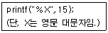
- f
- F
- 1111
- 15
(정답률: 알수없음)
4. 단항(unary) 연산자 연산에 해당하지 않는 것은?
- move
- shift
- rotate
- and
(정답률: 86%)
5. 시스템 프로그래밍에 가장 적합한 언어는?
- COBOL
- FORTRAN
- BASIC
- C
(정답률: 알수없음)
6. Base register와 관련된 어셈블리 명령어는?
- START, END
- OPEN, CLOSE
- USING, DROP
- ENTRY, EXTRN
(정답률: 알수없음)
7. 어셈블리어의 상수 표현 중 옳지 않은 것은?
- DC C'3456'
- DC X'2356'
- DC C'EFGH'
- DC X'EFGH'
(정답률: 55%)
8. 프로시저 프로그램의 호출과정 및 복귀과정에서 CALL 문으로 부른 서브 프로그램에서 메인 프로그램으로 다시 복귀하는 어셈블리 명령어는?
- END
- RETURN
- CALL
- RET
(정답률: 93%)
9. 어셈블리 명령 중 CPU 제어 그룹에 속하는 것이 아닌 것은?
- HLT
- WAIT
- ESC
- LEA
(정답률: 알수없음)
10. 어셈블리어에서 스트링 명령어는?
- ADD AX, BX
- CBW
- LODSB
- INC AX
(정답률: 알수없음)
11. 작성된 표현식이 BNF의 정의에 의해 바르게 작성되었는지를 확인하기 위하여 만든 트리는?
- parse tree
- full binary tree
- complete binary tree
- threaded binary tree
(정답률: 83%)
12. PLC에서 사용되는 내부 레지스터가 아닌 것은?
- Accumulator
- Program Counter
- System Register
- Stack Pointer
(정답률: 알수없음)
13. C 언어의 기억 클래스 종류에 해당하지 않는 것은?
- automatic variables
- register variables
- internal variables
- static variables
(정답률: 알수없음)
14. C 언어에서 x의 연산 결과는?
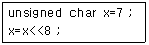
- 0
- 56
- 192
- 256
(정답률: 알수없음)
15. 객체지향 언어에서 객체에게 어떤 행위를 하도록 지시하는 명령을 무엇이라 하는가?
- 상속
- 이벤트
- 메시지
- 메소드
(정답률: 알수없음)
16. PC 어셈블리어의 데이터 정의 의사 명령어가 아닌 것은?
- DB(Define Byte)
- DW(Define Word)
- DQ(Define Quadword)
- DH(Define Hexaword)
(정답률: 47%)
17. 매크로 기능을 가장 올바르게 설명한 것은?
- 어셈블리 언어로 작성한 프로그램을 다른 컴퓨터의 기계어로 변환시키는 기능이다.
- 어셈블리 언어로 작성한 프로그램 내에 다른 고급 언어를 삽입할 수 있는 기능이다.
- 고급언어로 작성된 프로그램 내에 어셈블리 언어의 문장 및 함수 등을 삽입시키는 기능이다.
- 어셈블리 프로그램에서 반복적으로 나타나는 코드들을 묶어 하나의 새로운 명령으로 정의시키는 기능이다.
(정답률: 77%)
18. C 언어의 관계연산자 중에서 우선순위가 다른 것은?
- >
- >=
- <
- !=
(정답률: 70%)
19. C 언어에서 기억부류의 종류 중 선언된 블록 내/외에서도 유효하므로 선언된 블록 밖에서도 변수 값을 보존하는 형태는?
- auto
- register
- static
- extern
(정답률: 알수없음)
20. PLC의 각종 명령 중 실행시간을 총칭하여 처리 속도라 하는데 처리속도에 포함되지 않는 것은?
- 명령 호출
- Data 추출
- Data 저장
- Data 입력
(정답률: 알수없음)
2과목: 자료구조 및 데이터통신
21. 인터네트워킹(internetworking)을 위한 장비에 해당되지 않는 것은?
- 라우터
- 스위치
- 브리지
- 허브
(정답률: 알수없음)
22. 전송 오류 제어 방식에서 오류 제어용 코드 부가 방식이 아닌 것은?
- 패리티 검사
- 해밍 코드 사용방식
- 순환 중복 검사방식
- 궤환 전송방식과 연속 전송방식
(정답률: 44%)
23. TCP/IP 네트워크를 구성하기 위해 1개의 C 클래스 주소를 할당 받았다. C 클래스 주소를 이용하여 네트워크상의 호스트들에게 실제로 할당할 수 있는 최대 IP 주소의 개수는?
- 253개
- 254개
- 255개
- 256개
(정답률: 알수없음)
24. IP 주소와 호스트 이름 간의 변환을 제공하는 분산 데이터베이스를 무엇이라고 하는가?
- DNS
- NFS
- 라우터
- 웹 서버
(정답률: 89%)
25. 인터넷상의 전송 계층 프로토콜로 순서제어와 에러제어를 수행하는 프로토콜은?
- IP
- TCP
- UDP
- FTP
(정답률: 알수없음)
26. 좁은 의미의 VAN이 제공하는 기능에 속하지 않는 것은?
- 인터페이스 기능
- 전송 기능
- 교환 기능
- 통신 처리 기능
(정답률: 58%)
27. RS-232C 인터페이스나 V.24의 규격은 OSI 7계층을 적용하면 어디에 해당되는가?
- 제 1계층(물리층)
- 제 2계층(데이터링크층)
- 제 3계층(네트워크층)
- 제 4계층(트랜스포트층)
(정답률: 알수없음)
28. 몇 개의 터미널들이 하나의 통신 회선을 통하여 결합된 형태로 신호를 전송하고, 이를 수신 측에서 다시 몇 개의 터미널의 신호로 분리하여 컴퓨터에 입Χ출력하는 과정을 무엇이라고 하는가?
- 다중화
- 부호화
- 양자화
- 압축화
(정답률: 70%)
29. 교환 기술에서 성능 비교 요소가 아닌 것은?
- 오차 발생율
- 전파 지연
- 전송 시간
- 노드 지연
(정답률: 알수없음)
30. 다음 데이터 전송 제어의 단계 중 순서가 올바른 것은?
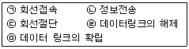
- (ㄱ)→(ㅁ)→(ㄴ)→(ㄹ)→(ㄷ)
- (ㄱ)→(ㄴ)→(ㅁ)→(ㄹ)→(ㄷ)
- (ㅁ)→(ㄱ)→(ㄴ)→(ㄹ)→(ㄷ)
- (ㅁ)→(ㄱ)→(ㄴ)→(ㄷ)→(ㄹ)
(정답률: 70%)
31. 데이터베이스 관리시스템이 갖는 장점으로 거리가 먼 것은?
- 데이터 중복을 최소화 한다.
- 여러 사용자에 의해 데이터를 공유한다.
- 데이터간의 종속성을 유지한다.
- 데이터의 일관성을 유지한다.
(정답률: 74%)
32. 다음 트리(tree)에서 간노드(nonterminal node)의 갯수는?
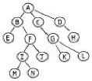
- 4
- 6
- 7
- 14
(정답률: 55%)
33. 8 bit 컴퓨터에서 2의 보수법에 의한 수치표현이 다음과 같을 때 10진수 값은 얼마인가?
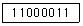
- 61
- -61
- 63
- -63
(정답률: 알수없음)
34. 데이터 구조에서 후입선출(last-in-first-out)과 가장 관계 있는 선형 구조는?
- Dequeue
- Queue
- Tree
- Stack
(정답률: 70%)
35. hashing을 이용할 때의 중요 고려 사항이 아닌 것은?
- 키 변환(key transformation)방식
- collision 처리
- bucket 크기
- 키(key) 크기
(정답률: 알수없음)
36. n개의 데이터에 대한 선택정렬(selection sort)의 총 비교 회수로 옳은 것은?
- n
- n(n-1)/2
- n(n+1)/2
- n2
(정답률: 82%)
37. (B+C)*E-F/G 를 postfix notation 으로 변환한 결과는?
- -BC+E*FG/
- BC+E*-F/G
- BC+E-*FG/
- BC+E*FG/-
(정답률: 70%)
38. 키값의 순서 (26, 5, 37, 1, 61, 11, 59, 15, 48, 19)인 10개의 레코드를 2회 정렬 수행 결과가 다음과 같을 때 어떠한 정렬(sorting)기법이 사용되었는가? (단, 사각 괄호는 정렬되어야 할 서브 파일이다.)
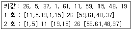
- 삽입정렬(insertion sorting)
- 히프정렬(heap sorting)
- 퀵정렬(Quick sorting)
- 2-원 합병정렬(2-Way merge sorting)
(정답률: 37%)
39. 다음과 같은 table이 주어져 있다. binary search 방법으로 C 를 찾기 위하여 Key의 순서를 올바르게 나열한 것은?
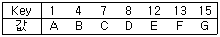
- 4, 1, 7
- 8, 1, 7
- 8, 4, 7
- 1, 7, 4
(정답률: 알수없음)
40. 도메인(domain)에 대한 설명은?
- 튜플을 구분할 수 있는 범위
- 어떤 항목을 표현하는 단위
- 표현되는 속성값의 범위
- 튜플들의 관계를 표현하는 범위
(정답률: 40%)
3과목: 전자계산기구조
41. 연관기억(Associative Memory) 장치에 대한 설명 중 옳지 않은 것은?
- 고속 메모리에 속한다.
- Mapping Table 구성에 주로 사용된다.
- 주소에 접근하지 않고 기억된 내용의 일부를 이용할 수 있다.
- CPU의 속도와 메모리의 속도 차이를 줄이기 위해 사용되는 고속 Buffer Memory이다.
(정답률: 알수없음)
42. indirect cycle 동안에 컴퓨터는 무엇을 하는가?
- 명령을 읽는다.
- 오퍼랜드(operand)를 읽는다.
- 인터럽트(interrupt)를 처리한다.
- 오퍼랜드(operand)의 어드레스(address)를 읽는다.
(정답률: 47%)
43. 데이지 체인(Daisy chain)에 대한 설명 중 옳지 않은 것은?
- 인터럽트의 우선순위를 결정하기 위하여 직렬 연결한 하드웨어 회로이다.
- 벡터에 의한 인터럽트 처리 방법이다.
- 우선순위에 기초한 인터럽트 처리 방법이 아니다.
- 인터럽트된 모든 장치들은 벡터를 동시에 보낼 수 있다.
(정답률: 82%)
44. 인터럽트 사이클을 위한 마이크로 연산이 아닌 것은?
- MAR←PC, PC←PC+1
- MBR(AD)←PC, PC←0
- M←MAR, IEN←0
- F←0, R←0
(정답률: 20%)
45. 연산자 코드(operation code)의 기능이 아닌 것은?
- 입Χ출력 명령 수행
- 제어 명령 수행
- 유효 주소 지정 기능
- 산술 연산 명령 수행
(정답률: 72%)
46. 인스트럭션 세트의 효율성을 높이기 위하여 고려할 사항이 아닌 것은?
- 기억공간
- 레지스터의 종류
- 사용빈도
- 주기억장치 밴드폭 이용
(정답률: 알수없음)
47. 레지스터 가운데 명령어를 수행 할 때마다 결과가 0인지 여부, 부호(음수인지 양수인지), 캐리 및 오버플로의 발생 여부 등을 각각 1비트로 나타내며 분기를 결정하는 중요한 역할을 하는 레지스터는?
- 카운터 레지스터
- 플래그 레지스터
- 인덱스 레지스터
- 주소 레지스터
(정답률: 50%)
48. I/O 인터페이스 실행 Command 종류가 아닌 것은?
- 제어 Command
- 메모리 Command
- 데이터 출력 Command
- 데이터 입력 Command
(정답률: 50%)
49. 다음은 인터럽트 체제의 동작을 나열하였다. 수행 순서를 올바르게 표현한 것은?
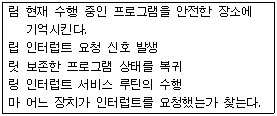
- 립→마→림→링→릿
- 립→림→링→마→릿
- 립→링→림→마→릿
- 립→림→마→링→릿
(정답률: 54%)
50. 메이저 상태(major state)에 대한 설명 중 옳은 것은?
- execute state가 끝나면 항상 fetch state로 간다.
- 특정한 명령에 대해서는 indirect state가 필요하다.
- 메이저 사이클은 fetch, indirect, execute, interrupt 과정을 반드시 수행해야 한다.
- indirect state는 데이터의 유효번지를 얻기 위해 기억장치에 접근하는 상태이다.
(정답률: 알수없음)
51. 자기테이프 등과 같은 대 용량의 보조 기억장치의 내용을 직접 접근이 가능한 영역으로 이동하여 컴퓨터시스템에서 자료를 접근할 수 있도록 하는 기능을 무엇이라 하는가?
- saving
- storing
- staging
- spooling
(정답률: 37%)
52. 부동 소수점 연산에 대한 설명으로 옳지 않은 것은?
- 부동 소수점 수에 대한 가감산의 경우 먼저 두 수의 지수부가 같도록 소수점의 위치를 조정해야 한다.
- 부동 소수점 수의 연산은 고정 소수점 수의 연산에 비해 단순하며, 계산 속도 역시 빠르게 처리된다.
- 부동 소수점 수의 연산에서 승제산의 경우 지수부와 가수부를 별도로 처리해야 하며, 경우에 따라 계산 결과를 정규화 시켜야 한다.
- 부동 소수점 수의 연산에서 승산의 경우 지수부는 더하고 가수부는 곱해야 한다.
(정답률: 59%)
53. 보통 4K 어의 기억 용량을 갖는 코어 기억 장치는 엄밀히 말하여 몇 개 어의 기억 용량을 갖는가?
- 4,000개
- 4,⑤6개
- 4,096개
- 4,136개
(정답률: 62%)
54. 컴퓨터의 메모리 용량이 16K ×32bit라 하면 MAR(Memory Address Register)와 MBR(Memory Buffer Register)은 각각 몇 비트인가?
- MAR:12, MBR:16
- MAR:32, MBR:14
- MAR:12, MBR:32
- MAR:14, MBR:32
(정답률: 알수없음)
55. 인터럽트를 종류 별로 구분하였을 때 정의되지 않은 명령이나 불법적인 명령을 사용했을 경우 혹은 보호되어 있는 기억공간에 접근하는 경우 발생하는 인터럽트를 무엇이라 하는가?
- Machine Check Interrupt
- Use Bad Command Interrupt
- Input-Output Interrupt
- External Interrupt
(정답률: 55%)
56. 보조 기억장치에 대한 설명으로 옳은 것은?
- 자기 테이프는 주소의 개념을 사용하지 않는 SASD이다.
- 자기 디스크의 디스크 접근시간은 탐색시간과 회전시간의 합으로만 나타낸다.
- 자기 드럼의 기억용량은 자기 디스크보다 크다.
- 자기 테이프는 random access가 가능하다.
(정답률: 43%)
57. BSA(Branch and Save return Address)의 마이크로 동작 중 시간 to에서 발생하는 동작이 아닌 것은? (단, to 는 sequencer 출력을 나타냄.)
- PC ← PC + 1
- MAR ← MBR(AD)
- MBR(AD) ← PC
- PC ← MBR(AD)
(정답률: 60%)
58. 기억장치에서 DRO(Destructive Read Out)의 성질을 갖고 있는 메모리는?
- 반도체 메모리
- 자기코어 메모리
- 자기디스크 메모리
- 자기테이프 메모리
(정답률: 31%)
59. 2진수 0011에서 2의 보수(2's complement)는?
- 1100
- 1110
- 1101
- 0111
(정답률: 80%)
60. 플린(Flynn)이 분류한 병렬 컴퓨터 중에서 실제 사용되기 어려운 것은?
- SISD (Single Instruction stream Single Data stream)
- SIMD (Single Instruction stream Multiple Data stream)
- MISD (Multiple Instruction stream Single Data stream)
- MIMD(Multiple Instruction stream Multiple Data stream)
(정답률: 50%)
4과목: 운영체제
61. 중앙 컴퓨터와 직접 연결되어 응답이 빠르고 통신비용이 적게 소요되지만, 중앙 컴퓨터에 장애가 발생되면 전체 시스템이 마비되는 분산 시스템의 위상 구조는?
- 완전연결(fully connected) 구조
- 성형(star) 구조
- 계층(hierarchy) 구조
- 환형(ring) 구조
(정답률: 93%)
62. UNIX 운영체제의 특징과 가장 거리가 먼 것은?
- 높은 이식성
- 파일 시스템의 리스트 구조
- 사용자 위주의 시스템 명령어 제공
- 쉘 명령어 프로그램 제공
(정답률: 64%)
63. 사용자가 요청한 디스크 입, 출력 내용이 다음과 같은 순서로 큐에 들어 있다. 이 때 SSTF 스케쥴링을 사용한 경우의 처리 순서는? (단, 현재 헤드 위치는 53 이고, 제일 안쪽이 1번, 바깥쪽이 200번 트랙이다.)
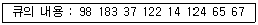
- 53-65-67-37-14-98-122-124-183
- 53-98-183-37-122-14-124-65-67
- 53-37-14-65-67-98-122-124-183
- 53-67-65-124-14-122-37-183-98
(정답률: 54%)
64. 너무 자주 페이지 교환이 발생하여 어떤 프로세스가 프로그램 수행에 소요되는 시간보다 페이지 교환에 소요되는 시간이 더 많은 경우를 무엇이라고 하는가?
- locality
- thrashing
- working set
- pre-paging
(정답률: 알수없음)
65. 기억 장치 관리에서 60K의 사용자 공간이 아래와 같이 분할되어 있다고 가정할 때 24K, 14K, 12K, 6K의 작업을 최적 적합(best-fit) 전략으로 각각 기억 공간에 들어온 순서대로 할당할 경우 생기는 총 내부 단편화(internal fragmentation)의 크기와 외부단편화(external fragmentation)의 크기는 얼마인가?
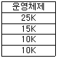
- 내부 단편화 4K, 외부 단편화 6K
- 내부 단편화 6K, 외부 단편화 8K
- 내부 단편화 6K, 외부 단편화 10K
- 내부 단편화 4K, 외부 단편화 12K
(정답률: 72%)
66. 스케줄링 알고리즘의 성능평가 기준이 아닌 것은?
- 반환시간
- 대기시간
- CPU 사용률
- 버퍼링
(정답률: 알수없음)
67. 실행 중인 프로세스가 CPU 할당시간을 다 사용한 후, 어떤 상태로 전이하는가?
- ready 상태
- running 상태
- block 상태
- suspended 상태
(정답률: 알수없음)
68. 교착상태의 예방 기법 중 각 프로세스는 한꺼번에 자기에게 필요한 자원을 모두 요구해야 하며, 이 요구가 만족되지 않으면 작업을 진행할 수 없게 하는 방법이 있다. 이것은 다음 중 무슨 조건을 방지하기 위함인가?
- 비선점(non preemption) 조건
- 점유 및 대기(hold & wait) 조건
- 순환대기(circular wait) 조건
- 상호배제(mutual exclusion) 조건
(정답률: 알수없음)
69. 분산 처리 시스템과 관련이 없는 설명은?
- 분산된 노드들은 통신 네트워크를 이용하여 메시지를 주고받음으로서 정보를 교환한다.
- 사용자에게 동적으로 할당할 수 있는 일반적인 자원들이 각 노드에 분산되어 있다.
- 시스템 전체의 정책을 결정하는 어떤 통합적인 제어 기능은 필요하지 않다.
- 사용자는 특정 자원의 물리적 위치를 알지 못하여도 사용할 수 있다.
(정답률: 알수없음)
70. 분산 운영체제의 개념 중 강결합 시스템(TIGHTLY - COUPLED)의 설명으로 틀린 것은?
- 프로세스간의 통신은 공유메모리를 이용한다.
- 여러 처리기들 간에 하나의 저장장치를 공유한다.
- 메모리에 대한 프로세스 간의 경쟁 최소화가 고려되어야 한다.
- 각 사이트는 자신만의 독립된 운영체제와 주기억장치를 갖는다.
(정답률: 알수없음)
71. 다음과 같은 접근제어 행렬에 대한 설명 중 옳은 것은?
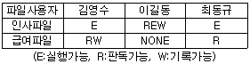
- 김영수는 인사와 급여파일을 판독하고 기록할 수 있다.
- 이길동은 인사와 급여파일을 읽을 수 있다.
- 최동규는 급여파일의 내용을 변경할 수 있다.
- 이길동은 인사파일에 대한 모든 권한을 가지고 있다.
(정답률: 알수없음)
72. 다음의 운영체제 형태 중 시대적으로 가장 먼저 생겨난 방식은?
- 다중 프로그래밍 시스템
- 시분할 시스템
- 일괄처리 시스템
- 분산처리 시스템
(정답률: 74%)
73. 운영체제의 목적으로 거리가 먼 것은?
- 사용자 인터페이스 제공
- 주변 장치 관리
- 데이터 압축 및 복원
- 신뢰성 향상
(정답률: 70%)
74. 디스크 스케쥴링 기법 중 다음의 특징을 갖는 기법은?
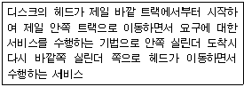
- FCFS(FIRST COME FIRST SERVICE)
- SSTF(SHORTEST SEEK TIME FIRST)
- SCAN
- LRU(LEAST RECENTLY USED)
(정답률: 알수없음)
75. UNIX 특징을 설명한 것중 틀린 것은?
- 대화식 시분할 체제이다.
- 하나 이상의 작업을 백그라운드에서 수행할 수 있으므로 대화식 시스템이라고 부르기도 한다.
- 동시에 여러 가지 작업을 수행하는 다중 태스킹 운영체제이다.
- 다중 사용자 운영체제로 두 사람 이상의 사용자가 동시에 시스템을 사용할 수 있다.
(정답률: 알수없음)
76. UNIX 파일 시스템의 블록구조에 포함되지 않는 것은?
- 사용자 블록(USER BLOCK)
- 부트 블록(BOOT BLOCK)
- INODE 리스트
- 슈퍼(SUPER) 블록
(정답률: 알수없음)
77. 두개의 프로세스간 선행순서를 Pi<Pj 로 표현할 경우 Pj 가 먼저 실행된다고 가정한다면, P2<P1, P4<P2, P4<P3 의 선행관계가 있는 경우에 병행으로 실행될 수 있는 프로세스는?
- P1, P3
- P1, P4
- P2, P4
- P3, P4
(정답률: 알수없음)
78. 페이지 교체 기법 중 매 페이지마다 두개의 하드웨어 비트가 필요한 기법은?
- FIFO
- LRU
- LFU
- NUR
(정답률: 50%)
79. 순차 파일에 대한 설명으로 틀린 것은?
- 적합한 기억 매체로는 자기 테이프를 쓰면 편리하다.
- 필요한 레코드를 삽입하는 경우 파일 전체를 복사할 필요가 없다.
- 기억장치의 효율이 높다.
- 검색시에 효율이 나쁘다.
(정답률: 62%)
80. 컴퓨터 자체 내의 기계적인 장애나 오류로 인하여 발생하는 인터럽트는?
- 입출력 인터럽트
- 외부 인터럽트
- 기계 검사 인터럽트
- 프로그램 검사 인터럽트
(정답률: 알수없음)
5과목: 마이크로 전자계산기
81. 크로스 어셈블러(Cross Assembler)를 옳게 설명한 것은?
- 목적 프로그램 최적화 프로그램(Optimizer)이다.
- 고급 언어를 기계어로 변환하는 번역 프로그램이다.
- 매크로 명령을 어셈블리 언어로 변환하는 번역 프로그램이다.
- 어셈블리 언어 프로그램을 서로 다른 목적 컴퓨터(Target Computer)의 기계어로 번역하는 번역 프로그램이다.
(정답률: 알수없음)
82. SP(stack pointer)가 기억하고 있는 내용의 메모리 번지를 지정하는 스택 구조를 무엇이라고 하는가?
- 연속(cascade) 스택
- 모듈(module) 스택
- 메모리 스택
- 간접번지지정 스택
(정답률: 알수없음)
83. 다음 명령어들 중에서 시프트(shift) 명령어에 속하지 않는 것은?
- ROR(Rotate Right)
- COMC(Complement Carry)
- SHR(Logical Shift Right)
- SHRA(Arithmetic Shift Right)
(정답률: 77%)
84. 제어 프로그램 개발 시 중요한 점과 거리가 먼 것은?
- 수행 속도가 빠르도록 한다.
- 고급(high-level) 언어일수록 좋다.
- 기억 장소를 효율적으로 사용해야 한다.
- 이해하기 쉬워야 하며, 조직적이라야 한다.
(정답률: 알수없음)
85. 운영체제(operating systems)의 설명 중 가장 옳은 것은?
- 주기억 장치에 들어 있는 제어 프로그램이다.
- 오퍼레이터(operator)의 조작 기능을 강화한 시스템이다.
- 프로그램 개발 및 관리를 효율적으로 지원하는 자동검증(auto test) 시스템이다.
- 시스템의 운영 효율을 높이고, 사용자가 편리하게 이용하기 위해 제공되는 시스템이다.
(정답률: 70%)
86. 스택틱 램(static RAM)을 구성하는 회로는?
- 플립 플롭
- 전하충방전
- 단안정 멀티바이브레이터
- 비안정 멀티바이브레이터
(정답률: 알수없음)
87. 마이크로프로세서가 I/O 인터페이스로부터 요청된 인터럽트를 해결하기 위해 I/O 주변 장치를 인식하는 방법 중 인식 과정의 속도를 향상시키기 위하여 각 I/O 주변장치에 특정 코드를 할당하는 방법은?
- 폴링 방식
- 벡터 인터럽트 방식
- 다중 인터럽트 방식
- 프로그램 제어 방식
(정답률: 70%)
88. 마이크로컴퓨터와 주변장치와의 데이터 전달 방식이 아닌 것은?
- 루프 입출력(loop I/O)
- DMA(direct memory access)
- 인터럽트 입출력(interrupt I/O)
- 프로그램 입출력(programmed I/O)
(정답률: 59%)
89. 직접 접근(direct access) 기억 장치가 아닌 것은?
- floppy disk
- magnetic tape
- hard disk
- magnetic drum
(정답률: 알수없음)
90. 어느 컴퓨터의 기억 용량이 65,536 바이트이다. 필요한 주소 선(address line)은 몇 비트인가?
- 8
- 16
- 32
- 64
(정답률: 70%)
91. 어큐뮬레이터(누산기)가 꼭 필요한 명령 형식은?
- 0주소 인스트럭션
- 1주소 인스트럭션
- 2주소 인스트럭션
- 3주소 인스트럭션
(정답률: 65%)
92. 격리형(isolated)과 메모리 맵(memory map)형 입출력 방식에 대한 설명 중 옳지 않은 것은?
- 메모리 맵 입출력 방식은 메모리의 번지를 I/O 인터페이스 레지스터까지 확장하여 저장하는 것이다.
- 메모리 맵 입출력 방식은 메모리에 대한 제어신호만 필요로 하고, 메모리와 입출력 번지 사이의 구분이 필요하다.
- 격리형 입출력 방식은 마이크로프로세서와 메모리 및 I/O 장치를 인터페이스 할 때 메모리와 I/O 장치의 입출력 제어신호(Read/Write)를 별도로 하여 구성하는 방법이다.
- 격리형 입출력 방식은 I/O 인터페이스 번지와 메모리 번지가 구별된다.
(정답률: 58%)
93. 마이크로컴퓨터의 ROM이 4096비트이면 어장(word length)이 8비트인 경우 몇 워드인가?
- 182
- 312
- 256
- 512
(정답률: 알수없음)
94. 로더(loader)의 기능에 해당하지 않는 것은?
- 할당(allocation)
- 연결(linking)
- 번역(translation)
- 로딩(loading)
(정답률: 75%)
95. 컴퓨터의 모든 행위를 감시하고, 통제하는 일련의 거대한 소프트웨어의 집합체를 무엇이라 하는가?
- 오퍼레이팅 시스템(operating system)
- 어셈블러(assembler)
- 컴파일러(compiler)
- 모니터(monitor)
(정답률: 75%)
96. 입출력 채널(channel) 제어기의 설명으로 옳지 않은 것은?
- 입출력 명령 해독
- 지시된 명령의 실행 상황을 제어
- CPU의 명령에 의해서만 조작 가능
- 각 입출력 장치에 명령 실행 지시
(정답률: 알수없음)
97. 마이크로프로세서의 특징으로 가장 거리가 먼 것은?
- 소형이며, 경량이다.
- 가격이 싸고, 소비전력이 작다.
- 게이트의 수가 적어 신뢰성이 낮다.
- 위의 특징을 이용한 신제품 개발은 개발 기간을 최소한으로 단축시킬 수 있다.
(정답률: 알수없음)
98. 자료를 가장 빨리 처리할 수 있는 주소 방식은? (단, 자료를 인스트럭션과 별도로 기억시키지 않을 경우)
- 직접 주소
- 간접 주소
- 자료자신 주소
- 계산에 의한 주소
(정답률: 29%)
99. 마스크 롬(Mask ROM)에 대한 설명 중 옳은 것은?
- 대량 생산 공정에 주로 사용된다.
- 자외선을 쪼여 그 내용을 지울 수 있다.
- 기억된 내용을 임의로 변경시킬 수 있다.
- 사용자의 편의에 따라 재프로그램 할 수 있다.
(정답률: 알수없음)
100. 가상메모리에서 페이지 교체 알고리즘에 해당되지 않는 것은?
- Write-through 알고리즘
- LRU(Least Recently Used) 알고리즘
- FIFO(First-In First-Out) 알고리즘
- LFU(Least Frequently Used) 알고리즘
(정답률: 40%)